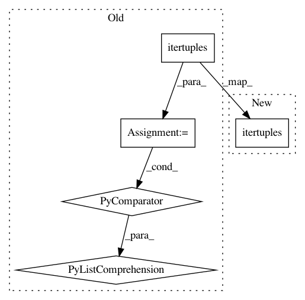

44682f54140e61f260878ad2d2703eecba91e1e9,ggplot/facets/locate.py,,locate_grid,#Any#Any#Any#Any#Any#,50
Before Change
lookup = dict((row, i) for i, row in
enumerate(facet_vals.itertuples(index=False),
start=1))
data["PANEL"] = [lookup[t] for t in
data.loc[:, vars].itertuples(index=False)]
data.sort(columns="PANEL", inplace=True)
return data
After Change
data["PANEL"] = 1
else:
keys_x = list(facet_vals.loc[:, vars].itertuples(index=False))
keys_y = list(panels.loc[:, vars].itertuples(index=False))
data["PANEL"] = match(keys_x, keys_y, start=1)
// matching dtype
In pattern: SUPERPATTERN
Frequency: 3
Non-data size: 5
Instances
Project Name: has2k1/plotnine
Commit Name: 44682f54140e61f260878ad2d2703eecba91e1e9
Time: 2015-04-20
Author: has2k1@gmail.com
File Name: ggplot/facets/locate.py
Class Name:
Method Name: locate_grid
Project Name: etal/cnvkit
Commit Name: b9bb04d10ebefde21de83ae30e63821bf719220f
Time: 2016-05-19
Author: eric.talevich@gmail.com
File Name: cnvlib/diagram.py
Class Name:
Method Name: create_diagram
Project Name: has2k1/plotnine
Commit Name: 44682f54140e61f260878ad2d2703eecba91e1e9
Time: 2015-04-20
Author: has2k1@gmail.com
File Name: ggplot/facets/locate.py
Class Name:
Method Name: locate_wrap